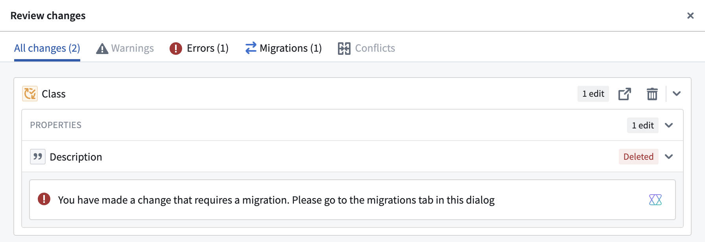
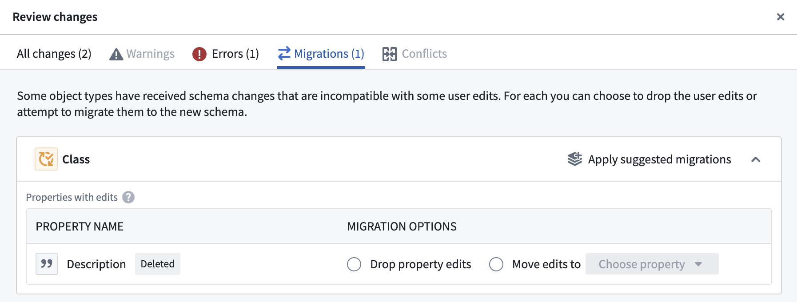
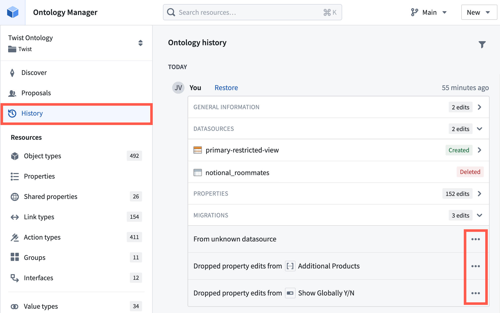
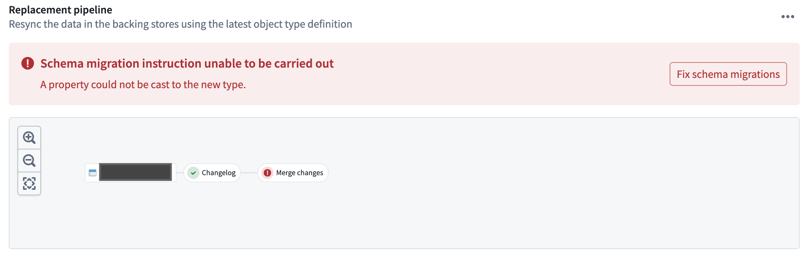

Workflows and applications built on the Foundry Ontology should evolve as an organization's needs change; in some cases, this evolution may involve updating the schema of object types in a way that requires additional changes elsewhere ("breaking changes"). Examples of breaking changes to the schema include changing the data type of an existing property, changing an object typeâs backing datasource, or changing the primary key of an object type. See below for a full list of breaking schema changes.
In Object Storage v1 (Phonograph), the user interface discourages such schema changes, particularly when an object type has received user edits. This is because such user edits cannot be migrated in OSv1; instead, breaking changes will result in the loss of existing user edits unless time-consuming and complex manual intervention can be performed.
Object Storage v2 removes this restriction on schema changes to facilitate flexible and iterative workflow building. To that end, OSv2 provides a schema migration framework with a list of predefined migrations that can be applied to existing user edits after a breaking schema change. The Ontology Manager automatically detects breaking schema changes and guides users to select a migration option from the predefined list. See below for a full list of supported migrations.
In this example workflow, a user deletes the Description property from an object type that has existing user edits. Ontology Manager automatically identifies this as a breaking schema change and displays a warning that a migration is required, as seen in the screenshot below.

In addition to displaying a warning, Ontology Manager will present a Migrations tab in the Review changes interface when the user wants to save their changes to the Ontology. Ontology Manager will block the user from saving changes until they define a migration for the breaking change. This prevents the change from breaking other workflows.
When the user navigates to the Migrations tab, the Ontology Manager displays the available migration options based on the type of breaking change, as shown below.

Once a schema change is specified and saved by a user in the Ontology Manager, a new schema version is created for the object type in the backend, and a corresponding replacement Funnel batch pipeline is orchestrated to update the index of the object type. The new object type version will be queryable by the Object Set Service (OSS) and other consumers of the Ontology APIs as soon as the replacement pipeline is completed and the new version is declared to be fully hydrated by object databases.
The following changes in the Ontology are considered to be breaking schema changes:
The following changes in the Ontology are not considered to be breaking schema changes:
Below is the full list of schema migrations that are currently supported in Object Storage v2.
Drop all property edits: This migration instruction drops all existing user edits on a specific property of an object type. User edits on other properties of the object type are not impacted. This instruction is generally used when deleting a property from an object type and there is no new property as a replacement.
Drop all struct field edits: This migration instruction drops all existing user edits on a specific struct field within a struct property of an object type. User edits on other struct fields on the same struct property are not impacted. This instruction is generally used when deleting a struct field from a struct property, and there is no new replacement struct field.
Drop all edits: This migration instruction drops all existing user edits on all properties of an object type. When this migration runs, the state of all objects of an object type is reset to data in the input datasources. To execute this migration, navigate to the Datasources tab of the object type and select Delete edits, located in the Edits section.
Move edits: This migration instruction moves all existing user edits on a specific property or on the entire object type. This instruction is generally used in two cases:
When the input datasource of an object type is being replaced by another datasource.
Move struct field edits: This migration instruction moves all existing user edits on a specific struct field to another struct field. This instruction is generally used when an existing struct field is deleted and being replaced by a new struct field.
Cast property to new type: This migration instruction casts the data type of existing user edits on a specific property to the new data type of the property. The list of supported data type casts are:
Timestamp â String
Cast struct field to new type: This migration instruction casts the data type of existing user edits on a specific struct field to the new data type of the struct field. The list of supported data type casts are:
Timestamp â String
Revert migration: This migration instruction reverts a previously-applied schema migration. This instruction is generally used when a saved Ontology change is being reverted through the History section in the Ontology Manager.

:::callout{theme="neutral"}
You can only apply up to 500 schema migrations at a single time. If the number of schema changes exceeds this limit, the migration must be performed in batches.
The current schema migration framework does not support applying migration instructions on the primary key property of object types.
:::
